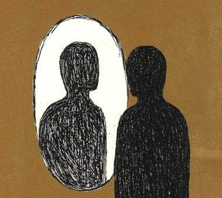

"Merenung Liar"
Tidak semua pikiran butuh satu tulisan utuh. Beberapa cukup satu kalimat: tajam, tidak nyaman, dan sengaja dibiarkan terbuka. Fragments adalah kumpulan potongan pikiran yang sering muncul di sela hari, tentang kebenaran, cinta, moral, dan makna. Bacalah pelan-pelan, satu per satu. Tidak harus setuju, cukup jujur pada reaksimu sendiri.

Fragment 01
Kamu tidak mencari kebenaran; kamu mencari sesuatu yang membuatmu merasa benar.
Kita sering mengira sedang menimbang bukti, padahal diam-diam sedang mencari pembenaran. Jawaban yang menenangkan lebih mudah dipercaya daripada jawaban yang benar tapi mengusik.
Fragment 02
Dunia tidak pernah gagal memenuhi ekspektasimu. Ekspektasimulah yang tidak pernah realistis terhadap dunia.
Kecewa terasa seperti kesalahan dunia, padahal sering kali ia lahir dari janji yang kita buat sendiri. Mungkin yang perlu diperiksa bukan dunianya, tapi ukuran yang kita bawa.
Fragment 03
Kamu bilang kamu “jadi diri sendiri”, tapi setiap pilihanmu disaring oleh satu pertanyaan: “orang bakal suka nggak?”
Menjadi diri sendiri terdengar bebas, sampai kita sadar siapa yang diam-diam duduk sebagai juri. Seberapa banyak dari “dirimu” yang sebenarnya hasil sensor oleh penonton?
Fragment 04
Cinta terasa dalam bukan karena ia istimewa, tapi karena kamu ingin ia istimewa.
Kedalaman perasaan tidak selalu membuktikan bahwa objeknya luar biasa. Sering kali yang kita cintai adalah besarnya harapan yang kita taruh di sana.
Fragment 05
Moralitasmu tidak diuji saat dilihat orang, tapi saat kamu yakin tidak akan ketahuan.
Berbuat baik di depan orang itu mudah; yang jujur adalah apa yang kita lakukan ketika tidak ada saksi. Gema dari cincin Gyges milik Plato: seberapa moralkah kita tanpa penonton?
Fragment 06
Kamu tidak takut salah; kamu takut terlihat salah.
Kesalahan yang tidak diketahui siapa pun jarang menyakitkan. Yang membuat kita diam adalah bayangan penilaian orang lain, bukan kesalahannya sendiri.
Fragment 07
Makna tidak hilang dari hidupmu; kamu hanya berhenti menciptakannya.
Kita menunggu makna datang seperti paket, padahal ia lebih mirip sesuatu yang dibuat. Ketika hidup terasa hampa, mungkin pertanyaannya bukan “di mana maknanya?” tapi “kapan terakhir aku membuatnya?”
Fragment 08
Yang kamu sebut “ideal” sering kali hanya cara halus untuk menolak realitas.
Idealisme bisa jadi keberanian, tapi juga bisa jadi tempat sembunyi yang terhormat. Menolak dunia sambil merasa mulia itu nyaman, dan karena nyaman, patut dicurigai.
Fragment 09
Kalau tidak ada yang melihat, apakah kamu masih akan jadi versi dirimu yang sekarang?
Tanpa penonton, mana yang tersisa dari caramu bicara, bekerja, dan bercita-cita? Jawabannya mungkin tidak nyaman, tapi di situlah kamu paling jujur.